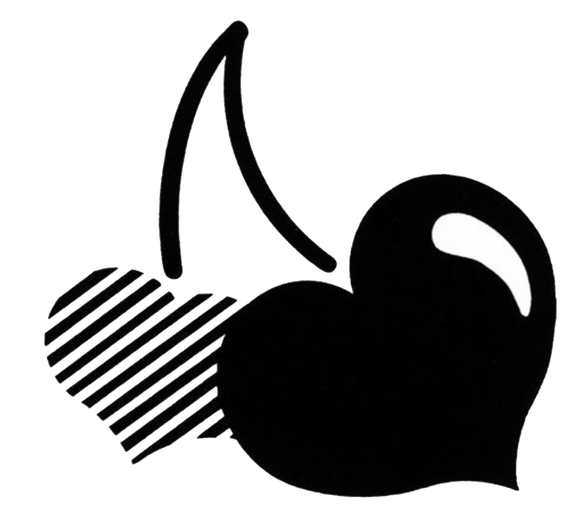

Conversation
How does the web impact graphic design?
Do you remember what it was first like?
I really can’t remember too long. cause at that time I still used my moms phone to get to the internet
What is your experience of the web?
Online web can just make you search anything you want anywhere or anytime. It makes life easier. It lets people get closer because of some -
social applications.
As a graphic designer, we need to also shoot our work and sell it. We need to let our audience know our designs so we want to have a website to show it.